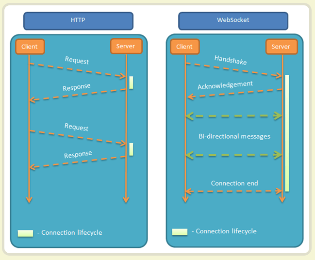

- webscket
- 什么是webscket网络通协议?
- webscket:服务器可以主动向客户端推送信息,客户端也可以主动向服务器发送信息,真正的双向平等对话,属于服务器推动技术一种
- 
- HTTP和webscket区别
- HTTP是通过客户端发起请求服务端在响应返回数据(单向请求的特点,轮询的效率低,非常浪费资源)
- webscket是做到双向互相对话特点
- webscket特点
- 1）建立在 TCP 协议之上，服务器端的实现比较容易
- 2）与 HTTP 协议有着良好的兼容性。默认端口也是80和443，并且握手阶段采用 HTTP 协议，因此握手时不容易屏蔽，能通过各种 HTTP 代理服务器
- 3）数据格式比较轻量，性能开销小，通信高效
- 4）可以发送文本，也可以发送二进制数据
- 5）没有同源限制，客户端可以与任意服务器通信
- 6）协议标识符是ws（如果加密，则为wss），服务器网址就是 URL